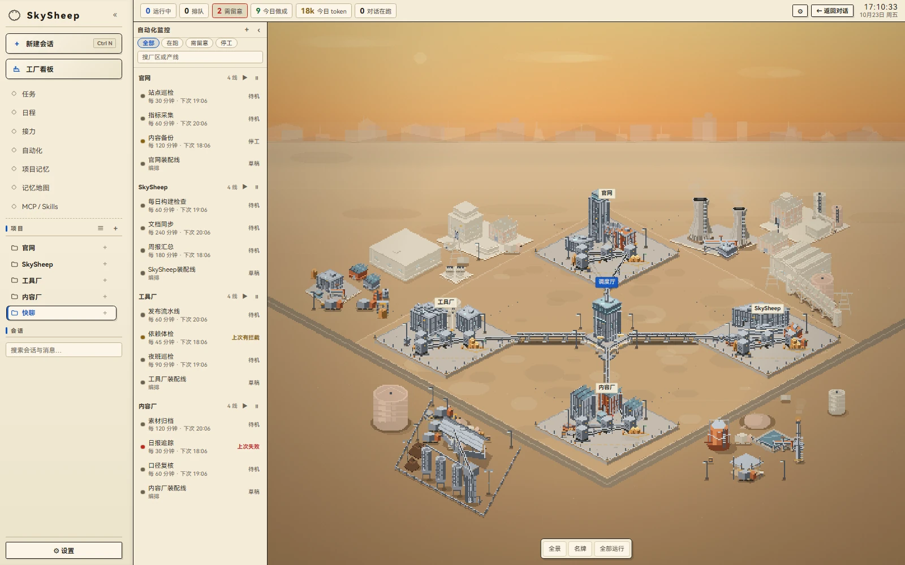
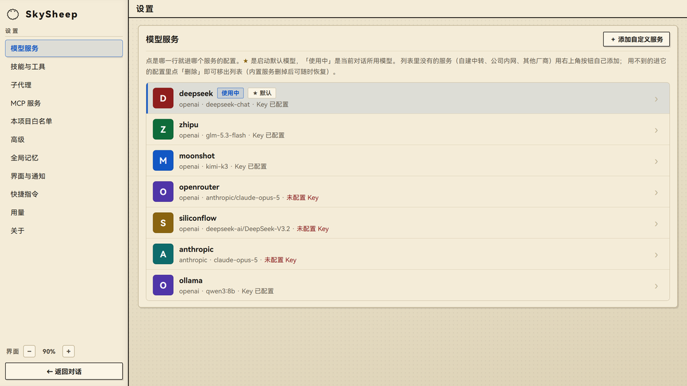
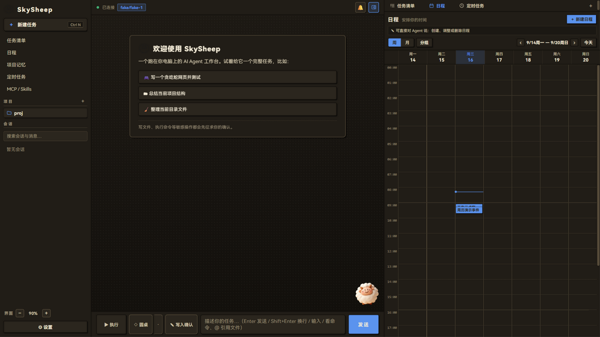
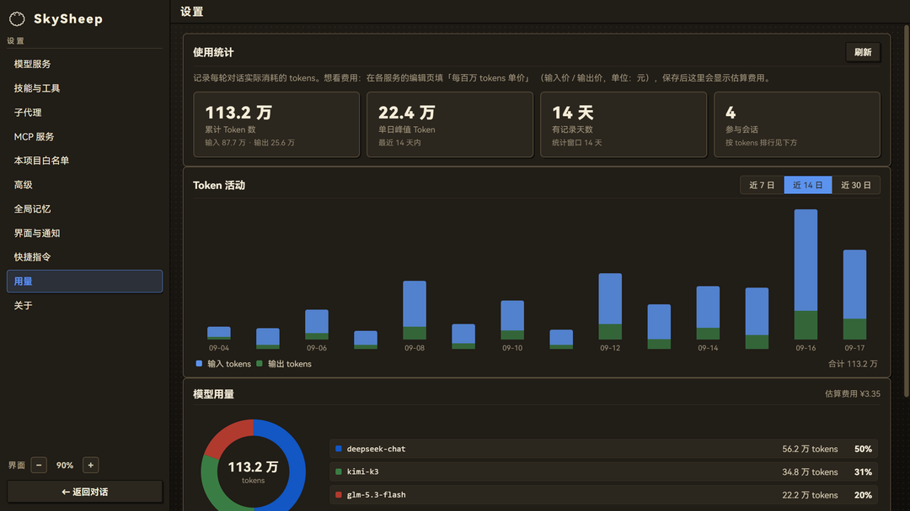
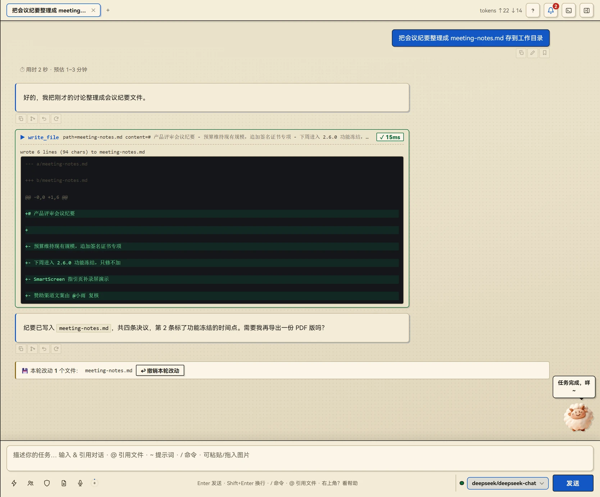

自动化有了自己的工厂
项目变厂区，任务变产线，每次运行变成传送带上的包裹。查看结果、手动派工、回放今天，在同一张场景里完成。
圆桌并行作答、团队工单板、对抗审查、接力交替，敏感操作默认确认、可回滚，自动化最后汇成一座看得见运转的工厂。带配乐的一分钟，看完就知道 SkySheep 长什么样。
工具真的执行、写文件真的弹确认、撤销真的把文件收回；圆桌、团队、对抗、接力各自跑完整流水线。下面这段 17 秒循环是完整片里的四幕，静音自动播放。
v2.6.2 把工厂看板、归档管理和浏览器控制收入安装包；v2.6.1 带来接力、扩展与网络设置。
项目变厂区，任务变产线，每次运行变成传送带上的包裹。查看结果、手动派工、回放今天，在同一张场景里完成。
归档按项目分组，支持搜索、恢复与自动归档旧会话。浏览器控制独立成页，启用开关、证书选项和数据清理都能直接设置。
接力独立工作台、对抗发现转团队顾问工单。Mods 实验性兼容 Claude Code 插件格式，代理、绕行名单与自签 CA 统一设置。
每个项目一座厂区，每条自动化一条产线。机台亮灯、包裹前进、成品装车，把分散的定时任务与编排，放进一张看得见进度的地图。

成功进成品区，失败进返工区。每次运行留下耗时与结果摘要；遇到权限拦截，会标明「有拦截」，方便判断任务是否真的做成。
并发满额自动排队，单次运行有超时上限，连续失败会聚合提醒。需要时在本机手动派工或查看运行记录。
按「回放」重演今天的运行。场景随时间切换昼夜；自选天气城市后，可跟着当地天气呈现雨、雪与雾。
下面每一类都是把要求说清楚就能开工的日常任务，不需要你先写脚本。
文件与文档
文件读写与精确编辑、PDF / Word / Excel / PPT / CSV 解析都是内置工具。移动与删除走可回滚的专用操作，误删也能撤。
把下载文件夹堆了半年的文件，按类型归档重命名
现有项目
读代码、定位问题、改文件、跑测试，一轮做完不满意就撤销本轮改动。适合改配置、批量重构、写小工具这类验收标准明确的任务。
这个报错复现一下，找到根因改掉，再补一条防回归的测试
定时自动化
定时任务到点执行，依赖编排串起多步流程。可导出为 Windows 系统计划任务，让应用关闭后也能执行。v2.6.2 新增工厂看板，集中查看各项目的自动化运行。
每天早上八点抓这几个网站的新内容，汇总后推到飞书群
多模型会诊
圆桌让多个模型各自作答、主席融合成一份答案；团队按角色分工、工单板跟进度；对抗模式组织专门挑错的审查流水线。
这个方案让几个模型各自挑一遍毛病，再给我结论
电脑控制
截屏、鼠标、键盘、窗口、剪贴板五类动作，默认关闭，需要时在设置里按需开启。适合「在几个软件里各点一遍导出」这类重复操作。
在这三个软件里各导出一次报表，存到同一个文件夹
远程使用
手机浏览器打开完整界面，确认卡照常逐条弹；飞书 / 微信里发消息派活，收日报与终态通知。
出门前派个活，路上用手机把确认卡点完
三种模式在图形界面里直接开关，不用拼命令行参数。同一轮只能选一种，避免互相打架。
成员模型并行独立作答，主席（主对话模型）把全部草稿融合成一份最终答案，锋利的批评和稳妥的结论都能留下。
流程示意
输出：一份融合结论 + 可回看的全部草稿
雷同草稿会去重、成员使用轻上下文等七项机制用于控制 Token 消耗。
把一个大任务拆成若干工单，每个队员有自己的角色、模型和工具范围，在团队频道里汇报、被验收、被打回重做。
流程示意
输出：可交付成果 + 完整频道记录
防失控上限：全局轮次上限、重复返工超限强制裁定、成员停滞自动移交总管、Token 预算越线强制交付。
不追求答案好看，追求把问题挖出来。四个角色接力，各自只看得到自己该看的那部分，避免互相迁就。
流程示意
输出：成立的问题清单 + 对应修复建议
审查结论可一键转为团队顾问工单，让发现的问题继续进入分工处理。
安全是默认行为，不需要先配置一轮。
只读操作自动放行；写文件（附 diff 预览）与执行命令默认逐次弹卡确认。三档权限模式可调，放宽档仅限本机界面切换。
按完整词前缀匹配；含 shell 拼接或解释器旗标的命令不命中规则、一律重新确认。规则按项目持久化，设置页可管理。
文件改动按轮快照，一键撤销本轮改动，重启后仍可回滚；每会话保留 50 轮，全项目兜底 500 条。
会话、配置、密钥存于本机，无遥测。网页抓取仅允许公网 http(s)、具备 SSRF 防护；外部网页内容按数据处理，不当作指令执行。
会话库自动滚动备份可可视化恢复；项目自带的 MCP 与技能配置需先确认信任；诊断包导出自动打码密钥。
确认卡片长这样
示意图，按钮不可点击。真实界面里三个选项逐次出现，选择结果会写进本轮记录，随时可查。
写入与执行逐次确认，只读自动放行。
工作目录内的写入自动放行，命令仍需确认。
不再逐次打断，仅建议在受控项目里使用。
和终端 Agent 的差异不在逐条功能清单，而在产品形态：对话、确认卡、diff 预览、文件改动、终端输出、审查诊断都在界面里，不用盯终端滚动日志。




下载安装包双击安装，Windows 10 / 11 x64。首次启动由三步向导完成接入：选服务 → 填 Key → 开始，也会自动检测本机的本地推理服务。
到 Releases 下载想第一时间用上刚落地的功能，可直接跑源码。源码运行以 Windows 为支持平台。
本地存储指的是：会话、配置、密钥、检查点、记忆都存在你自己的电脑上，SkySheep 不设遥测，也不把这些资料收集到自己的服务器。
而当你配置的是云端模型服务时，发出去的那段对话内容自然会经过服务商——这是模型推理本身的要求，和「数据被应用收集」是两回事。要完全不出本机，可以接本机推理服务，SkySheep 会自动检测。
会比单模型贵一些，这是实话。所以三条控制线都在：圆桌有雷同草稿去重、成员用轻上下文等七项机制压 Token；团队有全局轮次上限，Token 预算越线强制交付；成员模型可以各自指定——便宜模型跑成员，强模型当主席或总管。
速度上，圆桌的成员阶段并行作答，团队按工单并发；对抗是四角色接力，本来就是串行换来更彻底的审查。
默认是的。定时任务与日程提醒由应用内循环触发，所以关窗时选择「缩到系统托盘」才会继续后台运行；彻底退出期间到点的任务会在下次启动补跑。
如果需要应用完全关闭也照常执行，在任务卡片上点「⊞」导出为 Windows 系统计划任务，到点以无头模式独立跑。
文件改动按轮次快照，可以一键撤销本轮的文件改动，重启应用后仍然能回滚。每会话保留 50 轮，全项目兜底 500 条。
注意回滚覆盖的是文件改动，不是整个系统状态——命令执行产生的副作用（比如已经发出去的请求、已经推到群里的消息）不在回滚范围内。这也是为什么执行命令默认要你确认。
SkySheep 是Windows 桌面产品。安装包、桌面壳、凭据加密、Windows 沙箱、窗口与进程管理、计划任务导出都只针对 Windows 打磨。
--browser 模式能在 macOS / Linux 上跑起引擎与网页界面，属于开发者兜底路径，不在支持承诺内。跨平台要等 Windows 桌面体验达到稳定标准后再单独评估。
因为目前安装包还没有代码签名证书。未签名程序首次下载运行被 SmartScreen 拦截是 Windows 的默认行为，不代表检测到了病毒。
点「更多信息 → 仍要运行」即可继续。代码签名是项目的首要支出方向，签名后这个提示会消失。同时应用内更新要求发布方提供 .sha256 校验附件，缺失即拒绝自动安装。
差异在产品形态与使用方式，不在逐条功能清单。终端工具强在脚本化与 CI 集成，SkySheep 强在看得见、管得住、够得着：图形界面中文优先，权限确认、检查点回滚、白名单管理全部图形化，人不在电脑前也能用手机审批确认卡。
反过来，如果你要的是脚本化嵌入 CI、纯键盘效率流，终端 Agent 仍是更顺手的形态。SkySheep 内置无头模式与终端 REPL 作为补充。